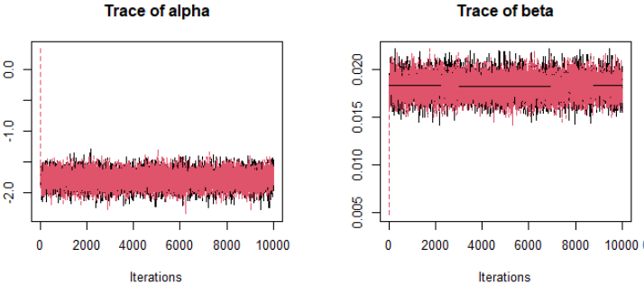
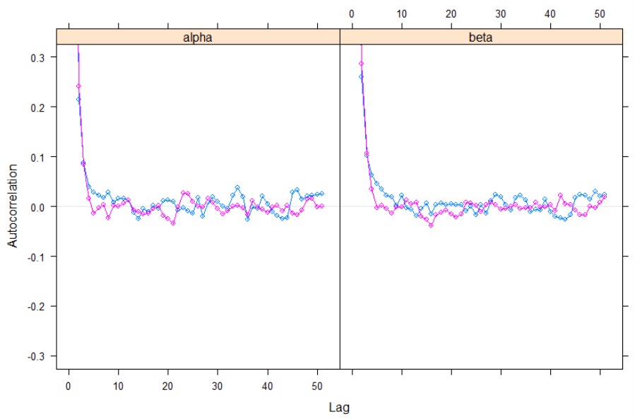
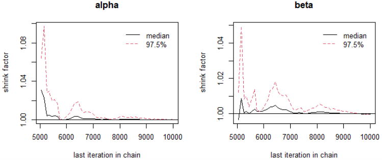
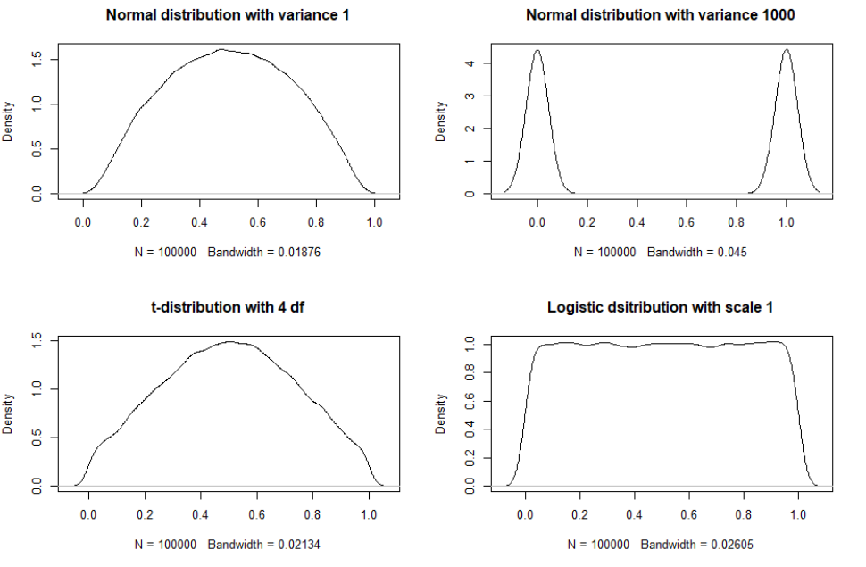
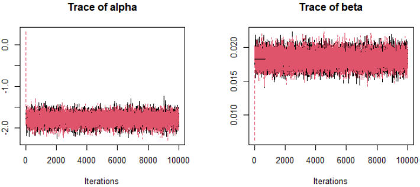
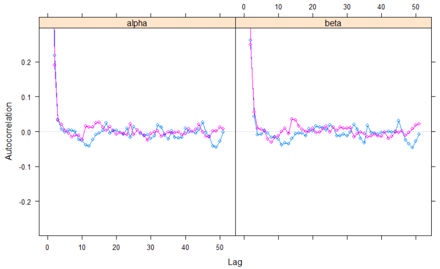
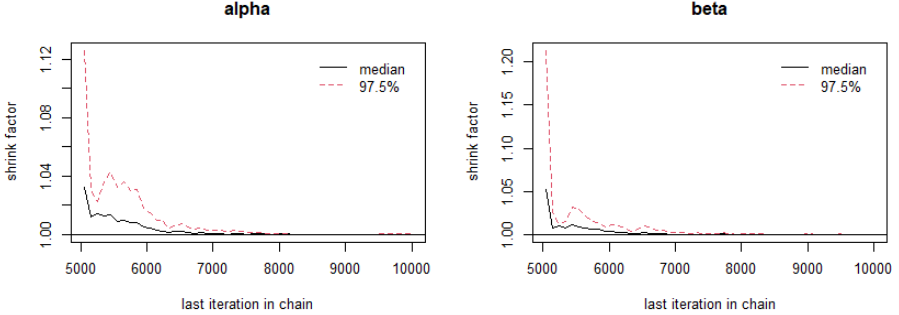
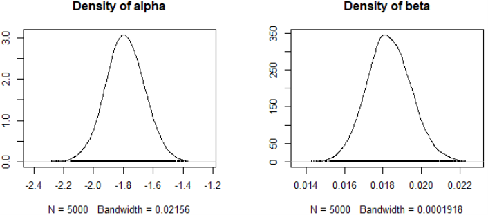
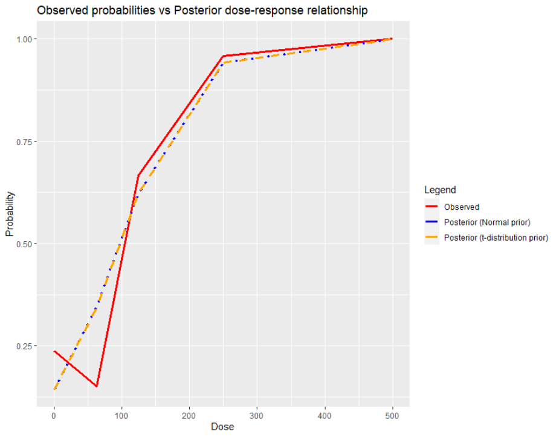

The first project concerns determining the dose-response relationship of a possible toxic product. Diethylene Glycol Dimethyl Ether (DYME), also referred to as diglyme, bis(2-methoxyethyl) ether is a high-volume industrial chemical with diverse applications. It is used to make industrial solvents, cosmetics, protective coatings, solvents in chemical synthesis, and is used in manufacturing of textile dyes. Price et al. (1987) describe a study in which timed-pregnant CD-1 mice were dosed by gavage with DYME in distilled water. Dosing occurred during the period of major organogenesis and structural development of the foetuses (gestational age 6 through 15). Relating the dose of DYME to the incidence of malformations in foetuses gives the following results:
| Dose: d | Number of foetuses: N | Number of malformations: y |
|---|---|---|
| 0.0 | 282 | 67 |
| 62.5 | 225 | 34 |
| 125.0 | 290 | 193 |
| 250.0 | 261 | 250 |
| 500.0 | 141 | 141 |
Assume that the likelihood of the experiment is specified by:
The parameter of interest is \(\beta\) since it indicates the dose \(d\) effect.
Vague prior probability distributions are taken for \(\alpha\) and \(\beta\). A bayesian model is formulated using these priors (likelihood and prior). Two MCMC chains with different starting values are generated and convergence is checked with the appropriate techniques.
For binomial response \(y\) of the logistic regression model, the likelihood is given by:
A suitably weak prior for each of the coefficients is normally distributed with mean 0 and a large variance of 10,000 to denote uncertainty, which is equivalent to a precision of 1/10000 = 0.0001.
In this case, the density of \(\alpha\) and \(\beta\) draws a nearly flat curve.
Applying the Bayes’ theorem, the posterior density, which is the product of the likelihood function and prior, is given by:
Different starting values have been chosen for the two MCMC chains. The initial values of the first chain are equal to the mean of the prior distribution chosen for these parameters while the second chain has starting values equal to the maximum likelihood estimates of the parameters. These values were chosen since they are likely under the posterior distribution; thereby, speeding up the convergence.
| Initial values | \(\alpha\) | \(\beta\) |
|---|---|---|
| \(1^{st}\) Chain | 0 | 0 |
| \(2^{nd}\) Chain | -1.78190 | 0.01823 |
For the chains, we used 10,000 iterations with the initial 5,000 iterations discarded (i.e., burn-in part). The rest of the 5,000 values will therefore be used to estimate the posterior measures.
To assess the convergence of our chains, we performed a visual inspection of the trace plots and the autocorrelation plots and a statistical test such as the Gelman-Rubin diagnostic test.
Looking at the trace plots of the coefficients \(\alpha\) and \(\beta\), there seem to be large steps between the successive draws and the chain does not seem to stay in the same state for too long (i.e., not highly autocorrelated). This indicates independent sampling behavior since the chains run quickly through the posterior distribution. Furthermore, independent of the starting point, the chains rapidly start sampling from the same distribution.

The autocorrelation plots do not indicate high autocorrelation issue as well. Indeed, autocorrelation is larger at short lags but remains around zero as the lag increases. This means that, in comparison with a high autocorrelation chain, we can take a shorter burn in part because it takes fewer iterations to forget the initial position, and it also means that the remaining part needs a shorter period to obtain stable posterior measures. Figure 2.

Gelman-Rubin diagnostic test is a more formal way of assessing convergence. It measures whether there is a significant difference between the within-chain and between-chain variance by a value called “potential scale reduction factors”. A value substantially above 1 indicates a lack of convergence. Because the point estimate for the factor of 𝛼 and 𝛽 are equal to 1, we do not have a reason to believe in non-convergence. Figure 3 also illustrates how the potential scale reduction factor changes as the number of iterations increases. Again, this indicates no anomaly as the values are not substantially above 1 and the factors approach 1 as iteration increases.

We could say that the number of burn-in values and iterations are sufficient since there seems to be convergence in both chains, which also ensures the stability of the posterior measures.
As a side note, the vague normal prior has the potential of being rather informative in the context of non-linear transformations, as is the case for the logit link in logistic regression. Even though a high variance normal distribution might be uninformative at the level of the linear coefficient, this is no longer the case in the probability scale, which becomes informative as it displays a bimodal distribution centered at 0 and 1. Alternative prior (e.g., t-distribution), attain a uniform probability distribution over 0 and 1 after transformation of the logistic regression coefficients. Nevertheless, in some scenarios, the transformation of a vague normal prior is not impactful (Northrup and Gerber, 2019). The following plots illustrate such priors:
``
Sensitivity analysis is the practice of understanding the variation and uncertainty of the posterior inferences as a result of a different prior or model used in the analysis. For example, we might want to compare different priors, and compare the results of the separate analyses. we perform a sensitivity analysis by changing the prior distribution for the dose effect into a t-distribution with 4 degrees of freedom.
Using the same MCMC settings (i.e., initial values for the chains, number of iterations, and burn-in part), we again took 2 MCMC chains but this time using a different prior for 𝛼 and 𝛽, which is given by:
The model specification used in the software is given by:
Looking at the trace, autocorrelation, and Gelman-Rubin diagnostic plots, we do not have a strong reason to believe there is high autocorrelation in the samples. At this point, both chains converged well using Normal and t-distribution priors. The posterior summary measures will be presented in the subsequent part to assess the sensitivity of the priors used.



Table 2 presents the posterior measures of the samples obtained using different priors for \(\alpha\) and \(\beta\) (after discarding the burn-in period). As could be expected from using vague priors, the posterior mean obtained from the MCMC procedure is close to the maximum likelihood estimates ( \(\alpha\): -1.788 vs -1.782; \(\beta\): 0.018 vs 0.018) and the posterior standard deviation is small. The posterior mean, standard deviation, and the 95% highest (posterior) density (HPD) interval for \(\beta\) are almost the same between the priors used while the estimates for \(\alpha\) are not too far away from each other. In other words, the choice of vague prior (i.e., whether Normal or \(t\)-distribution) does not seem to affect the posterior measures much.
To assess the accuracy of the posterior estimates, we have evaluated the Monte Carlo standard error (or Time-series SE) against the posterior standard deviation. If this value is less than 5% of the posterior standard deviation, then it indicates that the samples obtained are enough. The TSSE/SD column from table 2 gives the relationship of the Monte Carlo standard error and the posterior standard deviation. We could see that the estimates obtained from the Normal and \(t\)-distribution priors are accurate as the TSSE/SD value is less than 5% for both parameters.
| Mean | SD | HDP Interval | Time-series SE | TSSE/SD | |
|---|---|---|---|---|---|
| Normal priors with mean 0 and variance 10000 | |||||
| \(\alpha\) | -1.788 | 0.130 | [-2.053, -1.540] | 0.002 | 0.013 |
| \(\beta\) | 0.018 | 0.001 | [0.016, 0.021] | 0.000 | 0.014 |
| \(t\)-distribution priors with 4 degrees of freedom | |||||
| \(\alpha\) | -1.789 | 0.128 | [-2.046, -1.545] | 0.002 | 0.012 |
| \(\beta\) | 0.018 | 0.001 | [0.016, 0.020] | 0.000 | 0.013 |
The 95% HPD interval, which contains 95% of the most plausible estimates, does not include 0. We can therefore say that there is a dose-effect. When no dose is administrated, the odds of having malformations is equal to exp(-1.788) = 0.167 while a 10-point increase in the dose level is associated with an odds of exp(-1.788+0.018*10) = 0.201. Indeed, the odds increase as the dose increases. The smooth density plots for \(\alpha\) and \(\beta\) in the case of the normal prior (Figure 8) and the \(t\)-distributed prior (Figure 9) are consistent with each other, displaying a similar distribution, supporting the idea that they are approximating the same true posterior distribution.

The posterior dose-response relationship was computed by plugging in the posterior mean of \(\alpha\) and \(\beta\) in this formula:
On the other hand, the observed probability was derived from 𝑦/𝑁. Figure 10 displays the plot of the posterior dose-response relationship against the observed probabilities of a malformation per dose, where it is apparent that there is only a little difference among the posteriors obtained using different priors. Also, even though the posterior probabilities do not exactly represent the observed probabilities, it captures the trend rather well (except at dose 62.5). Overall, the probability of malformation increases together with dose, but this rate slows down starting at around dose 250.

safe level of exposure can be defined as a dose corresponding to a very small increase in excess risk of \(q\), e.g. \(q\) = 0.01. This is called the Benchmark dose (BMD) \(d^∗\) and can be obtained by solving the equation:
with \(P(d)\) the probability of an adverse effect at dose level \(d\). For a logistic regression with a linear dose model, the BMD is given by:
with \(q∗ = q(1−P(0))+P(0)\). We proceed to determine the posterior estimate of the safe level of exposure for EG corresponding with an excess risk of \(q = 0.01\).
To get the posterior distribution of BMD, the following lines were added in the model specification:
| Prior | Mean | HDP Interval |
|---|---|---|
| Normal | 3.740 | [3.250, 4.233] |
| \(t\)-distribution | 3.745 | [3.230, 4.240] |
The posterior mean value for BMD (using different priors) is given in Table 3. Using the Normal prior, the posterior mean value for BMD is 3.740 and the corresponding HPD interval is [3.250, 4.233]. To be certain that the increase of excess risk is kept at \(q=0.01\), the lower bound of the interval was taken as the Benchmark dose (i.e., 3.250).
Finally we predict the number of malformations at dose 100 for 240 exposed fetuses at dose level 100:
| Prior | Mean | HDP Interval |
|---|---|---|
| Normal | 122.478 | [103, 138] |
| \(t\)-distribution | 122.325 | [104, 139] |
The corresponding predicted number of malformations and credibility intervals are given in the table below. Around 122 malformations could be expected from 240 exposed fetuses at dose level 100.